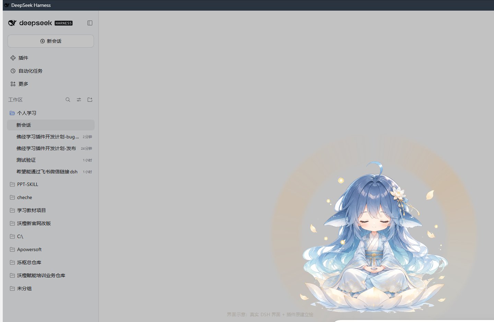
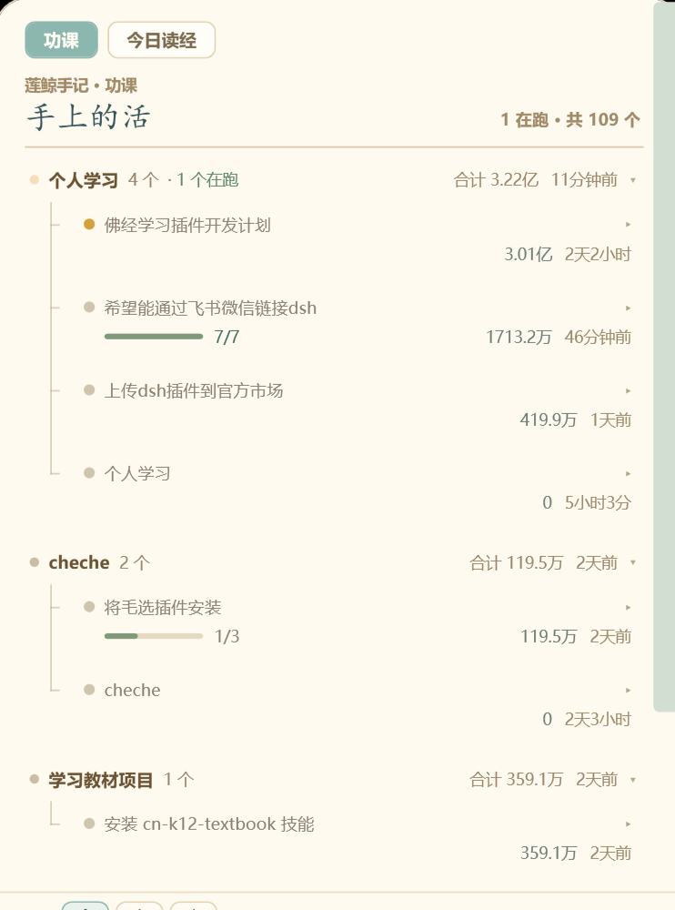

DSH 桌面宠物
她常驻 DSH 窗口的右下角。功课面板以项目为纲，逐条列出全部会话：哪一条正在执行、行至第几步、耗去多少 token、历经多久， 都记在一张宣纸卡上。点其中一行，即转入对应的对话。
任务状态、功德记录、读经进度，三处各自独立。
项目、会话、所处步骤、累计耗时与消耗，皆列于一处。任务执行期间，她身后浮现一圈金光并缓缓转动； 全部结束时，光环熄灭。
仅作状态提示，不作催促。点她一下，木鱼作声，浮出一句彩头，功德 +1。
以工作为修行，一声木鱼记一分功德。内置心经、金刚经、普门品、吉祥经、阿弥陀经、四十二章经六部，逐句阅读，进度各自记录。
读到何处，均记于名下。桌面宠物常见的三种打扰，她一概不为。
每小时只露面一次。夜半十点至清晨六点静默，一日之内至多十二回。
卡片浮于界面之上，不参与排版；贴近屏幕边缘时自行内收，屏幕狭小亦可容纳。
无任务执行时，光环熄灭，不以动效暗示仍在处理，也不虚报进度。
右下角常驻一尊小像，点开是一张宣纸卡片。


四条路，择其一。装在 DSH 里最省事。
最省事，不用命令行
插件 → 发现 → 搜索 dsh-plugin-lianjing，找到「莲鲸」点安装。
搜不到就先加一份索引源：
cdn.jsdelivr.net/gh/33333cheche-web/dsh-plugin-lianjing@main/market/index.json
版本写死，不随新版变动
包已发布到 npm registry，一条命令：
dsh plugin --profile desktop add ^ dsh-plugin-lianjing@2.0.2
需要能连上 registry.npmjs.org。
离线可用，版本固定
于 Releases 下载 tgz 或 zip，任一皆可，随后执行：
dsh plugin --profile desktop add ^ "D:\下载\dsh-plugin-lianjing-2.0.2.tgz"
路径改为文件实际所在位置。
欲改其形者用之
git clone https://github.com/ 33333cheche-web/dsh-plugin-lianjing.git dsh plugin --profile desktop add ^ "link:D:\path\to\dsh-plugin-lianjing"
改动页面后刷新即生效；若动及宿主，需重启 DSH。
装毕须将 DSH 完全退出（托盘图标一并退出），否则她不会现身。
不再需要时：dsh plugin --profile desktop remove dsh-plugin-lianjing